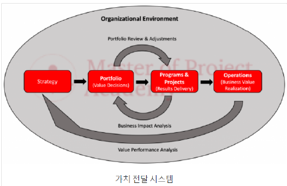

PMBOK 7판
교재 p.10
변경점계층가치전달시스템(VDS)관리원칙8성과영역
★ 빈출가치, 원칙중심의 프로젝트 관리 지침 안내서.
| 구분 | 내용 |
|---|---|
| 변경점 | 프로세스기반→원칙기반. |
| 계층 | 가치전달시스템(왜하는가) → 관리원칙(사고방식) → 성과영역(활동영역) |
| 가치전달시스템(VDS) | 전략적 목표, 포폴관리, 프로그램관리, 프로젝트관리, 성과평가체계 |
| 관리원칙 | 스팀을 쬐면 이가시리조 품복 위적변. 스튜어드십, 팀, 이해관계자, 가치, 시스템사고, 리더십, 조정, 품질, 복잡성, 위험, 적응성, 변화수용 |
| 8성과영역 | 이팀생기 성인측불. 이해관계자, 팀, 생애주기, 기획, 성과, 인도, 측정, 불확실성 |
